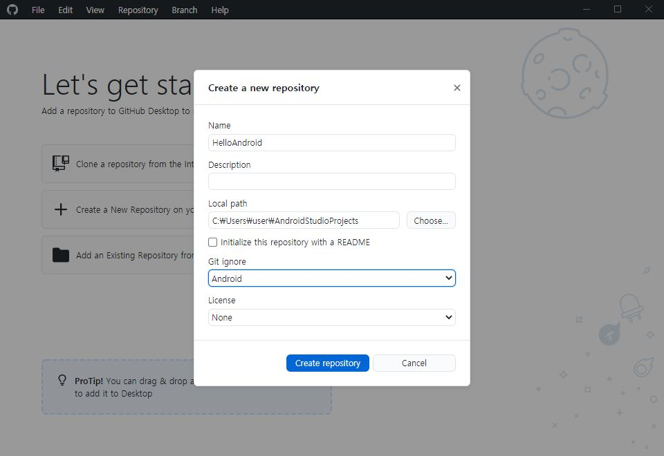

Git과 GitHub을 이용한 프로젝트 관리
학습목표
- Git/GitHub을 이용한 프로젝트 버전 관리 방법을 이해한다.
- GitHub을 이용한 프로젝트 협업 방법을 이해한다.
1. Git/Github 개요
2. Android Project의 버전관리
Android Project의 버전관리 시나리오는 다음과 같다.
- Android Project를 위한 새로운 지역 git 저장소 생성
- Android Project의 일부 파일을 수정 후, 지역 git 저장소에 커밋(commit)
- git 저장소를 이전 커밋(commit)으로 되돌림 (필요한경우)
- 원격 git 저장소(GitHub)에 푸시(push)
0. 사전준비
1. Android Project를 위한 새로운 지역 git 저장소 생성
GitHub Desktop 시작화면에서 Create new repository 클릭
[다른 방법] [File] 메뉴에서 [New respository..] 클릭
다음 정보 입력 및 선택 후 [Create repository] 선택
- [Name]: 저장소 (프로젝트) 이름 (예, HelloAndroid - 이 이름의 Android Project이 생성된 것을 가정 )
- [Local path]: 저장소의 위치 (예, C:\Users\kwlee\AndroidStudioProjects)
- [Git ignore]: Android 선택 (Git에서 버전관리되지 않는 대상 파일들을 설정한 것)

새로운 git 저장소(예, C:\Users\kwlee\AndroidStudioProjects\HelloAndroid)에 .git 폴더 및 .gitattributes, .gitignore 파일이 생성되어 있음을 확인할 수 있다.
2. Android Project의 일부 파일을 수정 후, 지역 git 저장소에 커밋(commit)
커밋(commit)이란 하나 이상의 파일에 대한 변경을 git 저장소에 저장하는 것을 의미한다. 다음은 Android Project의 일부 파일을 수정 후, 지역 git 저장소에 커밋을 하는 절차를 설명한다.
[Android Studio]: Android Project의 일부 파일을 수정
예를 들어, HelloAndroid 프로젝트에서 activity_main.xml 파일의 TextView 위젯의 android:text 속성 값을 'Hello Android'로 변경
[GitHub Desktop]: 커밋에 포함시킬 혹은 포함하지 않을 변경을 선택 하고, 커밋 메시지 작성후, [Commit to BRANCH] 클릭
3. 지역 git 저장소를 이전 커밋(commit)으로 되돌림 (필요한 경우)
다음은 현재 git 저장소를 이전 커밋 상태로 되돌리는 방법이다. 만약 여러 커밋을 되돌리고자 하는 경우에는 최신것부터 시작하여 순서대로 되돌리는 것이 좋다.
- [GitHub Desktop]: History 탭의 커밋 목록에서 되돌리고자 하는 커밋의 오른쪽 마우스버튼 클릭 후, 메뉴의 Revert this commit 클릭
4. 지역 git 저장소를 원격 저장소(GitHub)에 푸시(push)
GitHub Desktop에서 GitHub 계정에 로그인 설정
- File > Options.. 메뉴를 클릭
- GitHub.com의 Sign in 버튼 클릭
- Sign in 화면에서 GitHub의 Username과 Password 입력후 Sign in 클릭
작업중인 지역 git 저장소를 원격 저장소(GitHub)에 올리기
- GitHub Desktop 화면 상단의 Publish repository 클릭
- Keep this code private 체크박스 선택 해제 후, [Publish repository] 버튼 클릭
웹브라우저를 통해 GitHub의 원격 저장소에 지역 git 저장소의 내용이 동기화 되어 있는 확인
3. GitHub이용한 협업하기
GitHub이용한 협업하기 두 명의 시나리오는 다음과 같다.
가정
- GitHub에 두 개의 사용자 계정(예, kwanulee, kwanu70)이 존재
- kwanulee/HelloAndroid 저장소가 존재
- kwanulee/HelloAndroid 저장소를 kwanulee와 kwanu70이 공유하여 협업하고자 함
- kwanulee/HelloAndroid 저장소의 Collaborator로 kwanu70을 추가 (참조. 가. GitHub 저장소에 Collaborator 추가하기)
- kwanu70은 kwanulee/HelloAndroid 원격 저장소의 파일을 지역 git 저장소로 복제 (참조. 나. GitHub 저장소를 복제하기)
- kwanu70은 지역 git 저장소로 복제된 파일을 변경/커밋하고, 이를 kwanulee/HelloAndroid 저장소와 동기화 (참조. 다. 복제된 GitHub 저장소를 수정하고 동기화하기)
- kwanulee는 자신의 지역 git 저장소를 kwanulee/HelloAndroid 원격 저장소의 최신 상태로 동기화 (참조. 라. 원격 GitHub 저장소의 최신 내용을 지역 git 저장소로 가져오기)
1. GitHub 저장소에 Collaborator 추가하기
GitHub 저장소의 메인 화면에서 Settings 탭 선택
Settings 탭의 왼쪽 메뉴 중에 Manage access 선택 한후 Invite a collaborator를 클릭한다. Collaborator로 추가할 GitHub 계정 ID (예, kwanu70)를 입력하고, [Add XXXXX to this repository] 클릭
Collaborator로 추가한 계정 사용자의 이메일로 아래와 같은 내용의 이메일이 전송되며, View inviation을 클릭하여 요청을 확인한다.
다음과 같은 페이지가 나오면 Accept invitation을 클릭하여 Collaborator 요청을 받아들인다.
2. GitHub 저장소를 복제하기
- GitHub Desktop의 [File] 메뉴에서 [Clone respository..] 클릭
- 저장소 복제
- GitHub 사용자이름과 복제(Clone)하려는 GitHub 리파지토리를 입력, (예, kwanulee/HelloAndroid)
- 복제할 리포지토리가 저장될 로컬 패스를 지정 후, [Clone] 클릭
3. 복제된 GitHub 저장소를 수정하고 동기화하기
AndroidStudio에서 복제된 HelloAndroidCloned 프로젝트를 열고, activity_main.xml 파일을 변경
<?xml version="1.0" encoding="utf-8"?>
<LinearLayout xmlns:android="http://schemas.android.com/apk/res/android"
xmlns:app="http://schemas.android.com/apk/res-auto"
xmlns:tools="http://schemas.android.com/tools"
android:layout_width="match_parent"
android:layout_height="match_parent"
android:orientation="vertical"
tools:context="com.example.kwlee.helloandroid.MainActivity">
<TextView
android:layout_width="wrap_content"
android:layout_height="wrap_content"
android:text="Hello Android!"
/>
</LinearLayout>
커밋에 포함시킬 혹은 포함하지 않을 변경을 선택하고 커밋 메시지 작성후, [Commit to master] 클릭
GitHub Desktop 화면 우측 상단의 [Push origin] 버튼 클릭
웹브라우저를 통해 GitHub의 원격 저장소에 지역 git 저장소의 내용이 동기화 되어 있는 확인
4 . 원격 GitHub 저장소의 최신 내용을 지역 git 저장소로 가져오기
[GitHub Desktop]의 Fetch origin을 클릭
만약 원격 GitHub 저장소에서 지역 git 저장소로 가져올 커밋이 존재한다면, Pull origin을 클릭하여 원격 GitHub 저장소의 커밋을 가져온다.